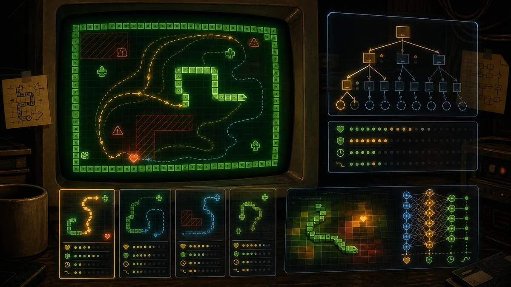
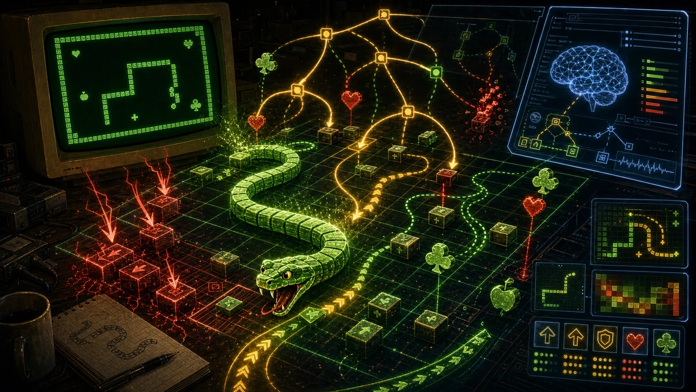

Hoe de bot denkt
De pagina Bot speelt geen opname af. Hij laadt het echte spel in een <iframe>, injecteert een JavaScript-bot in dat draaiende spel, en laat de bot dezelfde pijltjesscancodes indrukken als een speler. De bot is een kleine planner: elke zet bouwt hij de slangtoestand opnieuw op, zoekt hij veilig voedsel, weigert hij routes die vallen worden, let hij op staartlussen, en valt hij terug op overleven wanneer geen veilige voedselroute bestaat.

bot.html; hij leest live variabelen uit de port en drukt toetsen in zoals een speler dat zou doen. Behalve twee administratieve ingrepen — springen naar het gekozen LEVEL en de resterende BONUS vlak voor een clear op nul zetten — laat hij de regels en engine ongemoeid.1. Waar de bot draait
De botpagina heeft een iframe met game.html als bron. Bij elke iframe-load voegt bot.html CSS toe die de gewone spelchrome verbergt, en voert daarna de botstring met eval() uit binnen dat iframe:
cell.frame.contentWindow.eval('var IDX=0,TARGET=' + activeLevel + ';' + BOT);Die plek is bewust gekozen. De game gebruikt const- en let-globals zoals T, BTEL, ETEL, LEVEL, HART, KLAVER en pushKey(). Code die in dezelfde scriptomgeving wordt ge-evalueerd kan die namen zien, ook al zijn het geen gewone window-eigenschappen. Zo kan de bot peek() aanroepen, T[BTEL] lezen en via pushKey() toetsen indrukken alsof hij onderdeel van de pagina is.
Levelsprong
Hij sluit level 1, zet LEVEL = TARGET - 1, drukt een keer F10, en laat de eigen gameloop het gekozen level openen.
Bonusreset
Wanneer er nog twee of minder items zijn zet hij BONUS = 0. Daardoor hoeft de botpagina niet lang te wachten terwijl de resterende bonus aftelt.
Echte invoer
Hij stuurt DOS-achtige uitgebreide toetsstrings: omhoog ' H', omlaag ' P', links ' K', rechts ' M'.
Live status
Hij meldt score en resterende items aan de ouderpagina met parent.botStatus(...), en succes of falen met parent.botEnd(...).
2. Welke data hij ziet
De bot gebruikt hetzelfde schermgeheugenmodel als het spel. Er is geen nette lijst met objecten; hij leest tekens uit VRAM met peek(offset). Het slangenlijf wordt opgebouwd uit de game-array T, van staartindex ETEL tot kopindex BTEL.
| Gamewaarde | Betekenis voor de bot | Effect op planning |
|---|---|---|
32 | Leeg vak | Vrij betreedbaar. |
3 ♥ | Hart | Voedsel van 10 punten; laat de slang groeien. |
5 ♣ | Klaver | Voedsel van 25 punten; laat de slang groeien. |
1 ☺ | Smiley | Normaal vermijden; alleen toegestaan in ontsnappingsmodus. |
10 ◙ | Steen | Duwbaar als het vak erachter leeg is. |
24, 26, 27 ↑→← | Bewegende pijlen | Altijd fataal, inclusief vakken waar ze zo naartoe gaan. |
219 | Slangenkop | De game gebruikt dit voor botsingen; de bot volgt de kop via T[BTEL]. |
Voor denkbeeldige routes bewaart de bot alleen verschillen in een overlay-map cells. Daarin staan bijvoorbeeld een geduwde steen of een leeg geworden staartvak. Staat een vak niet in de overlay, dan leest hij het echte scherm met peek(). Zo hoeft niet voor elke tak de volledige 4000-byte VRAM-array te worden gekopieerd.
3. Een besliscyclus
Elke zet volgt dezelfde ladder. De eerste strategie die een richting oplevert wint; de bot drukt die toets, wacht volgens de snelheidsschuif, en rekent daarna opnieuw vanuit de nieuwe live toestand.
Pijlengevaar wordt per tick opnieuw berekend en binnen die tick onthouden.
Eerst een ondiepe zoekactie naar nabije harten of klavers, zonder smileys.
Als dichtbij niets veilig is, zoekt de voorzichtige planner verder.
Pas als schone routes falen, worden dezelfde zoekacties met smileys toegestaan.
Als de kop posities herhaalt of de score lang stil staat, gaat de bot voedsel afdwingen.
Alleen zonder lusdruk probeert hij de bewegende staart te bereiken om ruimte te kopen.
Als alle planners falen, kiest hij de beste directe veilige zet.
const decide = (idle, looping) => {
resetDanger();
const urgent = idle >= 45 || looping;
return nearFood(false) ?? routeFood(false) ?? nearFood(true) ?? routeFood(true) ??
(urgent ? (pressureFood(false, true) ?? pressureFood(true, true)) : null) ??
(!urgent ? tailFirst() : null) ??
pressureFood(false, urgent) ?? pressureFood(true, urgent) ??
survivalMove();
};4. Pijlengevaar
Een leeg vak kan in het volgende tick fataal zijn. danger(offset) markeert een doel onveilig als er al een pijl staat, als een pijl er straks in stapt, of als een pijl via de rand terugkomt.
peek(o) is 24, 26 of 27.Dit model kijkt een tick vooruit, niet naar de hele vijandentoekomst. Dat is genoeg: na elke echte game-update rekent de bot opnieuw met het verse scherm.
5. Zetten simuleren
De kern is move(state, scancode, allowSmile). Die geeft een nieuwe denkbeeldige toestand terug als de zet legaal is, of null als hij botst, omkeert, sterft of een onmogelijke steen wil duwen.
| Regel | Hoe de bot hem toepast |
|---|---|
| Niet direct omkeren | De tegenovergestelde richting van de huidige richting wordt geweigerd. |
| Geen gevaar | Als danger(next) waar is, valt de zet af. |
| Geen zelfbotsing | Een vak in bodySet is verboden. |
| Smileys optioneel | Tijdens normale zoekactie verboden; tijdens ontsnappen toegestaan. |
| Stenen duwen | Een steen kan alleen een vak vooruit als dat vak leeg is. |
| Groei | Harten, klavers en smileys laten het lijf groeien; lege zetten verwijderen eerst de staart. |
| Eerste zet bewaren | Elke tak onthoudt alleen de eerste echte toets die straks gedrukt moet worden. |
6. Voedsel zoeken
Voedsel zoeken is verdeeld over drie planners. Ze starten allemaal bij de kop, simuleren lijf en geduwde stenen, en bewaren alleen de eerste toets van een winnende route.
| Planner | Wanneer | Limieten | Voorkeur |
|---|---|---|---|
nearFood() | Voor elke brede zoekactie. | Diepte 9, of 12 met weinig items; maximaal 260 toestanden. | Zeer hoge afstandsstraf: veilig dichtbij voedsel wint. |
routeFood() | De normale voorzichtige routezoeker. | Diepte 78, of 115 in de eindfase; maximaal 950 toestanden. | Overleving eerst: staartbereik, uitgangen en ruimte. |
pressureFood() | Bij stilstand, lussen of mislukte staartvolging. | Diepte 70-125; 720-1050 toestanden. | Meer druk richting voedsel, maar nog steeds zonder duidelijke vallen. |
In de eindfase zoekt de bot dieper, omdat de laatste harten en klavers vaak precies in lastige hoeken liggen. Smileys blijven tweede keus: ze worden alleen toegestaan als schone routes mislukken.
7. Valcontroles
Een hart bereiken is niet genoeg. Veel slechte slangenbots volgen de kortste route en ontdekken te laat dat het voedsel in een doodlopende zak lag. Daarom test Sneekie's bot kandidaten met meerdere signalen.
Uitgangen
legalCount() telt hoeveel zetten direct na het eten nog mogelijk zijn. Nul wordt geweigerd; een uitgang krijgt een zware straf.
Bereikbare ruimte
spaceInfo() vult vanaf de gesimuleerde kop en respecteert richting, muren, lijf, stenen, voedsel en gevaar.
Staartbereik
Dezelfde flood fill noteert of de kop de staart kan bereiken. Dat betekent meestal een bewegende ontsnappingsroute.
Overlevingsdiepte
survivalDepth() kijkt met een kleine beam search hoeveel toekomstige zetten mogelijk blijven.
8. Noodzetten
Na de normale veilige voedselplanners heeft de bot drie noodgedragingen. Ze voorkomen bevriezen, maar staan in een vaste volgorde zodat staartvolgen geen eindeloze cirkel wordt.
| Noodplan | Doel | Gedrag |
|---|---|---|
pressureFood() | Lussen breken | Loopt bij idle >= 45 of herhaalde kopposities. |
tailFirst() | Tijd kopen | Zoekt naar de huidige staart zolang er geen lusdruk is. |
survivalMove() | Laatste redmiddel | Scoret directe zetten op ruimte, staartbereik, uitgangen, voedsel, smileykosten, stenen en rechtdoor gaan. |
9. Routes scoren
Na de veiligheidsfilters krijgt een voedselkandidaat een score. De normale route-score geeft overleving het meeste gewicht, daarna punten, en pas daarna kortheid:
score += survivalDepth * 5600
score += exits * 2400
score += reachableSpace * 16
score += itemPoints * 150
score -= routeDistance * 260
score -= smileysEaten * 1200
score -= stonesPushed * 55
score -= oneExitAfterEating ? 18000 : 0
De grote gewichten voor staartbereik en overlevingsdiepte zijn het anti-valgedrag. Een iets langere route met toegang tot de staart wint van een korte route een krappe hoek in.
10. Snelheidslimieten
De bot moet tussen zichtbare zetten kunnen denken. Daarom zijn er harde caps:
danger()gebruikt een generatiecache.nearFood()is ondiep: 260 toestanden en 9-12 stappen.routeFood()stopt bij 950 zoektoestanden.pressureFood()gebruikt 720 toestanden normaal en 1050 wanneer urgent.survivalDepth()is een beam search en bewaart per diepte de 40 toestanden met de meeste uitgangen.- De schuifregelaar verandert de wachttijd tussen toetsaanslagen, niet de zoeklogica.
De schuifregelaar klikt vast op deze snelheden: 10, 10, 20, 30, 49, 50, 60, 70, 80, 90, 100. Lage waarden laten de bot langer wachten tussen zetten; hoge waarden drukken veel sneller toetsen in, tot ongeveer 45 ms per zet.
delay = round(45 + 375 * ((100 - speedValue) / 100) ** 1.6)11. Win, vast, herstart
De botpagina heeft zeven tabs: levels 26-32. Winst flitst groen, falen flitst rood, en beide gaan daarna door naar de volgende tab. Na level 32 gaat hij terug naar level 26.
| Voorwaarde | Resultaat |
|---|---|
LEVEL === TARGET + 1 && LIVE > 0 | Schoon gehaald. Groen flitsen en door naar het volgende gekozen level. |
LEVEL !== TARGET | Het spel sprong weg of eindigde. Beschouw als falen en flits rood. |
BTEL beweegt niet meer | De slang zit vast, sterft of beweegt niet. Rood na de stall-drempel. |
| Geen veilige zet | Alle planners faalden. Rood. |
| Geen scorewinst voorbij de dynamische idle-limiet | Voortgang stokt. Rood. De limiet groeit wanneer er weinig items over zijn. |
Score wordt gebruikt voor de idle-timer in plaats van itemaantal, omdat late harten klavers kunnen spawnen. De laatste klaver kan een lange veilige route vragen zonder dat de score meteen verandert.
12. Grenzen en afwegingen
De bot is bewust praktisch, niet perfect. Hij lost niet het hele level als een enorm plan op, want het bord verandert na elke pickup, geduwde steen, gespawnde klaver en vijandentick. In plaats daarvan plant hij voortdurend opnieuw vanuit de live toestand.
- Hij simuleert het lijf en geduwde stenen, maar niet een volledige meer-tick-toekomst van alle vijanden.
- Hij behandelt huidig en volgend pijlengevaar voorzichtig en rekent na de echte game-update opnieuw.
- Zijn state-hash is compact en bedoeld om te snoeien, niet om elk borddetail te bewaren.
- Hij kiest alleen een smiley wanneer schone voedselroutes falen.
- De survival-beam bevoordeelt veel uitgangen en kan smalle maar technisch veilige routes missen.
Kort gezegd: de bot denkt als een voorzichtige slangen-speler. Hij wil dichtbij voedsel, maar alleen als dat voedsel ademruimte overlaat. Wordt het krap, dan zijn staart, open ruimte en toekomstige uitgangen belangrijker dan de dichtstbijzijnde onveilige punten.
